Тема 1.1: Основы кинематики
Модели тел, системы отсчета, равномерное и равноускоренное движение
1. Базовые понятия и модели
Механическое движение — изменение положения тела в пространстве относительно других тел с течением времени.
Материальная точка — модель тела, размерами которого можно пренебречь в условиях данной задачи (например, эритроцит в кровеносном сосуде).
Система отсчета: Тело отсчета + Система координат + Часы. Любое движение относительно.
- Траектория — линия движения.
- Путь (S) — длина траектории (скалярная величина).
- Перемещение (r) — вектор, соединяющий начальное и конечное положение.
2. Равномерное прямолинейное движение
Тело за любые равные промежутки времени проходит одинаковый путь. Скорость постоянна.
Уравнение движения (координата тела в любой момент времени):
3. Неравномерное и равноускоренное движение
В реальной жизни тело чаще движется неравномерно. Если скорость меняется одинаково за равные промежутки времени — это равноускоренное движение.
Ускорение (a) — быстрота изменения скорости.
Формулы для расчета скорости и пути:
Средняя скорость при равноускоренном движении:
4. Относительность движения. Закон сложения скоростей
Скорость тела зависит от выбора системы отсчета. Например, человек идет по вагону поезда. Относительно вагона его скорость 1 м/с, а относительно Земли (если поезд едет 20 м/с) — 21 м/с.
Закон сложения скоростей: Скорость тела относительно неподвижной системы отсчета равна векторной сумме скорости тела относительно подвижной системы и скорости подвижной системы.
5. Равномерное движение по окружности
При движении по окружности даже с постоянной по модулю скоростью тело движется с ускорением, так как постоянно меняется направление вектора скорости.
Центростремительное ускорение (aцс) всегда направлено к центру окружности.
Угловая скорость (ω) — угол поворота за единицу времени.
Период (T) — время одного полного оборота. Частота (ν) — число оборотов в секунду.
6. Графики движения (Важно для практики!)
На графике зависимости скорости от времени v(t):
- Ускорение a — это наклон графика (тангенс угла наклона). Чем круче линия, тем больше ускорение.
- Перемещение (и путь) — это площадь фигуры под графиком скорости (трапеция или прямоугольник).
График v(t) для равноускоренного движения
🎯 Шпаргалка для Практической работы №1
В практической работе встретятся задачи, для которых нужны дополнительные формулы:
1. Встречное движение и обгон (поезда):
Если навстречу: vсбл = v₁ + v₂. Если догоняют: vсбл = v₁ - v₂.
Время прохождения: t = Lобщ / vсбл.
2. Движение по реке:
По течению: vпо = vкатера + vтеч.
Против течения: vпр = vкатера - vтеч.
3. Тело брошено горизонтально (с башни):
Время падения: t = √(2h / g). Дальность полета: S = v₀ * t.
4. Объемная скорость кровотока:
Q = v * Sсечения, где Sсечения = πR².
📝 Примеры решения типовых задач
Пример 1 (Относительность): Поезд едет со скоростью 72 км/ч. Пассажир идет по вагону в направлении движения поезда со скоростью 1,5 м/с. Какова скорость пассажира относительно Земли?
Решение: Переведем 72 км/ч в м/с: 72 / 3,6 = 20 м/с.
Так как скорости сонаправлены, v = v₁ + v₂ = 20 + 1,5 = 21,5 м/с.
Пример 2 (Торможение): Автомобиль, двигаясь со скоростью 20 м/с, начал тормозить и остановился через 4 с. Найдите ускорение и тормозной путь.
Решение: a = (v - v₀) / t = (0 - 20) / 4 = -5 м/с². (Ускорение отрицательное).
Тормозной путь: S = (v² - v₀²) / (2a) = (0 - 400) / (2 * -5) = -400 / -10 = 40 м.
🩺 Связь с медициной
- Скорость нервного импульса: до 120 м/с. Обеспечивает защитные рефлексы.
- Скорость кровотока: В аорте ~0,5 м/с, в капиллярах — 0,5 мм/с (для успешного газообмена).
- Центрифугирование: Разделение крови на плазму и форменные элементы основано на центростремительном ускорении. Более плотные эритроциты движутся к стенкам пробирки.
- УЗИ-допплерография: Метод измерения скорости кровотока, основанный на эффекте Доплера (изменении частоты волны при отражении от движущихся эритроцитов).
🧪 Быстрый опыт: Измерение времени реакции
Ход: Один студент держит линейку (отметка 0 см между пальцами второго). Отпускает без предупреждения. Второй ловит. Расчет времени: t = √(2h / g). Норма для человека 0,15–0,25 с.
Подробная теория (для самостоятельного изучения)
1. Модели тел и движений в механике
Одна из основных задач физики — нахождение положения тела в конкретный момент времени. Раздел физики, который решает данную задачу, называется механикой. Изучением движения тел независимо от причин этого движения занимается кинематика (раздел механики).
Для описания такого движения используют модели реальных тел. Моделирование необходимо, потому что у реальных объектов разные части могут двигаться различно.
Например, поезд въезжает на станцию. Необходимо определить путь, пройденный поездом. Длина платформы станции соизмерима с длиной поезда, вагоны пройдут разный путь. Поэтому при определении пути необходимо знать конкретную точку поезда. Однако если мы рассмотрим движение поезда между городами, то для нахождения пути поезда не нужно рассматривать какую-то конкретную его точку. В подобных случаях используют модель реального объекта — материальную точку.
Материальная точка — это модель тела в механике, размеры (форму) которого можно не учитывать (при этом материальная точка может иметь массу) при решении конкретных физических задач.
💡 Обрати внимание!
Материальная точка — это физическая модель, которая используется для упрощения и схематизации описания реальных явлений природы (в действительности материальных точек не существует). Данная модель используется прежде всего для идеализации условий движения тел.
Используют данную модель в случаях, когда:
- размеры исследуемого объекта малы по сравнению с его перемещением или по сравнению с характерными размерами других тел, которые фигурируют в задаче;
- геометрическое положение тела может быть однозначно определено одной точкой данного тела;
- решение задачи не зависит от размеров или формы тела.
Изменение положения тела относительно других тел называется механическим движением.
Характер изменения положения тел различен, поэтому выделяют несколько видов механического движения (рис. 1).

Существуют и другие классификации движения. 1. Постоянство скорости определяет равномерное и неравномерное движение. 2. Вид траектории определяет прямолинейное и криволинейное движение. Тело будет двигаться с постоянной скоростью по прямой, только в случае отсутствия действия других тел или если их действие скомпенсировано. Из-за существования сил трения сохранение скорости невозможно. Поэтому равномерное прямолинейное движение также является физической моделью.
2. Система отсчёта, радиус-вектор, траектория, путь, перемещение
В механике положение тела и его движение описывают относительно других тел. Например, человек в лодке (рис. 2) относительно дерева на берегу изменяет своё положение, а относительно лодки он находится в покое.

При решении задач в кинематике используют систему отсчёта. Система отсчёта состоит из тела отсчёта (объект, относительно которого задаётся положение другого тела), системы координат и прибора для определения времени (часы).
Линия, вдоль которой тело или материальная точка изменяет своё положение, называется траекторией.
На рисунке 3 изображена система отсчёта для парусника: маяк — тело отсчёта; траектория парусника изображена красным цветом.

Выбирают систему координат в зависимости от условия конкретной задачи:
- движение вдоль прямой — одномерная система координат (OX или OY);
- движение в плоскости — двумерная система координат (OXY);
- движение в пространстве — трёхмерная система координат (OXYZ).
Виды систем координат
Одномерная: используется, когда положение объекта можно описать одним числом — расстоянием от выбранного начала отсчёта (тела отсчёта) вдоль заданной линии.
Примеры: 1. Движение поезда по прямому пути. 2. Езда на автомобиле по прямой трассе. 3. Движение лифта. Все движения вынуждены происходить вдоль одной линии, нет возможности свернуть «вбок» или «вверх».
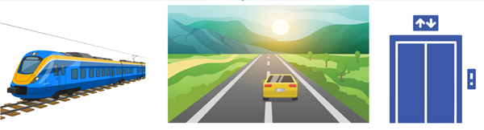
Двухмерная: используется, когда положение объекта на плоскости описывается двумя независимыми числами.
Примеры: 1. Навигация по карте города. 2. Игра в шахматы, шашки, морской бой. 3. Экран монитора или телефона. 4. Спортивные игры на поле. 5. Построение графиков. Объект может свободно перемещаться по плоскости (вперёд-назад и влево-вправо).
Трёхмерная: используется для описания положения в реальном объёмном мире, где нужны три независимые координаты.
Примеры: 1. Авиация и космонавтика (широта, долгота, высота). 2. Строительство и архитектура. 3. 3D-моделирование и компьютерные игры. 4. Медицинская визуализация. При проведении КТ или МРТ положение любой патологии в теле человека описывается тремя координатами для точного доступа. Объект существует в объёме и может перемещаться вперёд-назад, влево-вправо и вверх-вниз.
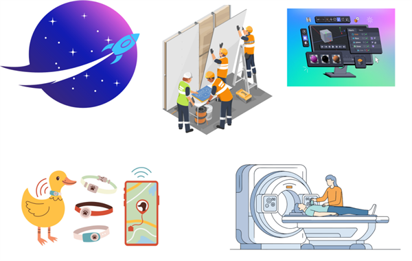
Основные физические величины в кинематике
Физические параметры тел, физических явлений описываются векторными и скалярными (числовыми) величинами:
- векторные величины имеют числовое значение и направление;
- скалярные величины имеют только числовое значение.
1. Рассмотрим векторные величины, которые используются для описания движения. Данный способ описания механического движения принято называть векторным.
Радиус-вектор r — это направленный отрезок, который соединяет начало координат и исследуемую точку (рис. 3).
Перемещение s — это вектор, который соединяет начальное положение тела и его положение в исследуемый момент времени (рис. 3).
Перемещение тела за любой промежуток времени равно изменению радиус-вектора Δr. На рисунке 3 по правилу нахождения разности между векторами перемещение тела будет равно:
2. Рассмотрим числовые характеристики векторных величин, которые используются для описания механического движения. Данный способ описания механического движения принято называть координатным. На рисунке 7 изображены радиус-вектор точки rA и его проекции на координатные оси xA(t), yA(t), которые являются функциями времени.
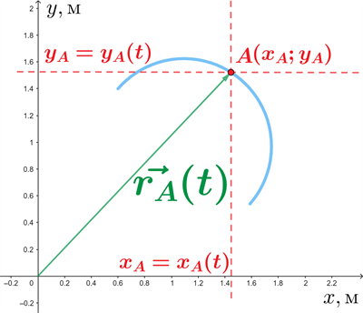
Путь — длина траектории (обозначение — L (рис. 3), единица измерения в СИ — м [метр]).
На рисунке 8 показаны различные способы нахождения:
- проекций вектора перемещения тела (обозначение — Sx, Sy, единица измерения в СИ — м [метр]);
- модуля вектора перемещения тела (обозначение — |S| или S, единица измерения в СИ — м [метр]).
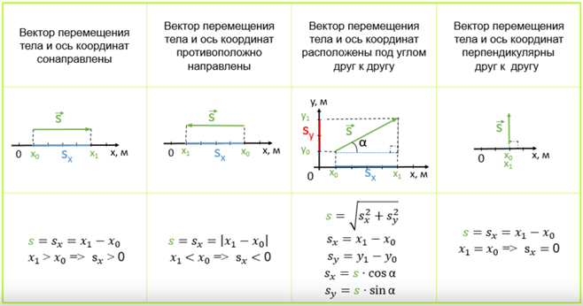
3. Прямолинейное равномерное движение
1. Параметры движения и их зависимость от времени
Посмотри вокруг: многое движется. Машины едут, люди ходят, лифт поднимается, часы тикают. Самое простое из всех движений, которые нас окружают, — это равномерное движение.

Главное правило равномерного движения: если тело движется равномерно, то за одинаковое время оно проходит одинаковое расстояние. Пример: Если пешеход делает ровно два шага каждую секунду, его движение тоже можно считать равномерным.
Равномерное движение может быть разным.
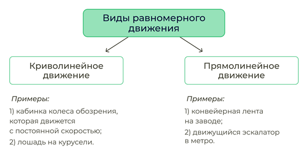
Далее речь пойдёт только о равномерном прямолинейном движении. Основной задачей механики является определение положения тел и их скоростей в любой момент времени.
Для определения положения или описания движения тела нужны параметры движения. Координаты, скорость и время движения тела являются параметрами движения.
Зависимость координат от времени называется уравнением движения материальной точки.
Скорость равномерного прямолинейного движения
Ещё из курса физики 7 класса известно, что V = S / t, где V — скорость тела [м/с]; S — перемещение тела [м]; t — время движения [с].
Пример: 1. Если пешеход за t=2 часа прошёл s=10 км, то его скорость v=10км / 2ч = 5 км/ч. Он шёл равномерно. 2. Если автомобиль едет с постоянной скоростью v=90 км/ч в течение t=3 часов, то он проедет путь S=v·t=90 км/ч · 3 ч = 270 км.
Скорость как физическая величина является векторной, то есть для её полного определения необходимо знать не только численное значение, но и направление в пространстве.
Рассмотрим случай равномерного прямолинейного движения материальной точки. Предположим, что за промежуток времени Δt точка переместилась из положения M1 в положение M2, при этом вектор перемещения составил Δr.
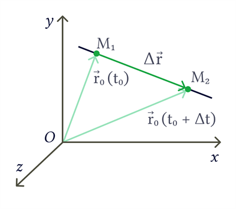
Если разделить вектор перемещения Δr на промежуток времени Δt, за который это перемещение произошло, мы получим новый вектор. Этот вектор и называется скоростью равномерного прямолинейного движения и обозначается V:
Поскольку Δt — величина положительная, направление скорости совпадает с направлением вектора перемещения Δr.
Модуль скорости определяется как V = |Δr| / Δt, где величина |Δr| представляет собой путь, пройденный точкой за время Δt. При равномерном движении отношение пути ко времени постоянно, поэтому модуль скорости численно равен расстоянию, которое точка проходит за единицу времени.
Уравнение равномерного прямолинейного движения точки
Математика — язык физики.
1. Функция — это зависимость одной переменной величины от другой. Например, в математике — y=y(x), в кинематике движение материальной точки на плоскости описывается двумя координатами X и Y, которые зависят от времени: x=x(t), y=y(t).
2. При равномерном прямолинейном движении материальной точки (модель реального движения) её координата является линейной функцией времени: x = x0 + vxt.
Обозначения: x0 — начальная координата в начальный момент времени t0, x — координата в произвольный момент времени t, vx — проекция вектора скорости на ось OX.
3. Формула определяет координату исследуемой точки, но не пройденный путь (длину отрезка траектории, пройденного телом за время Δt=t−t0).
4. Уравнение траектории движущегося тела — функциональная зависимость, связывающая координаты X и Y (при описании движения на плоскости).
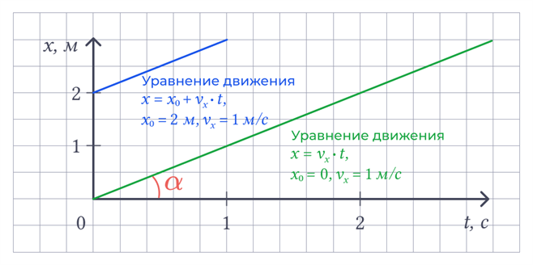
Сравним с функцией из математики. Уравнение прямой с угловым коэффициентом: y=kx+b, где k — угловой коэффициент. k=tg α, где α — угол между прямой и осью Ox. Если точки A и B имеют координаты A(x1;y1) и B(x2;y2), то k=(y2-y1)/(x2-x1)=tgα.
Векторные и скалярные величины в физике
- В математике вектор — это математическое понятие (векторные величины характеризуются модулем (длина вектора) и направлением).
- В физике вектор обозначает конкретную физическую величину, и к термину «вектор» добавляется название этой физической величины (например, вектор скорости, вектор перемещения).
- Вектор проецируется на оси прямоугольной системы координат (например, Vx и Vy).
- Модуль вектора обозначается |v| = V и определяется через его проекции по формуле: |v| = √(vx2 + vy2). Формула верна для нахождения модуля любого вектора!
- Физические величины, которые не характеризуются направлением, называются скалярными (например, длина предмета, температура и т. д.).
Векторное и скалярное уравнения движения материальной точки
1. Общий вид:
- векторное уравнение — r = r(t);
- числовые (скалярные) уравнения — x=x(t), y=y(t), z=z(t).
2. Прямолинейное равномерное движение:
- векторное уравнение — r(t) = r0 + vt,
где r0 — радиус-вектор исследуемой точки в начальный момент времени t0, r(t) — радиус-вектор исследуемой точки в произвольный момент времени t; - числовые (скалярные) уравнения — x = x0 + vxt.
2. Средняя путевая скорость
Физическое понятие «скорость» является неоднозначным термином: зависимость от расстояния и времени позволяет ввести два понятия скорости, так как в физике используются векторные (перемещение) и скалярные (модуль перемещения, пройденный путь, время) величины.
1. Отношение вектора перемещения S к интервалу времени Δt определяет среднюю (по времени) скорость:
- Направление вектора средней (по времени) скорости определяется согласно математической формуле определения данной физической величины.
- Длина вектора vср не связана с длиной вектора S, так как данные физические величины имеют разные размерности (единицы измерения).
- Числовое значение данной физической величины в случае равномерного прямолинейного движения является постоянным: vx=const. (Примечание: «const» — «постоянный»).
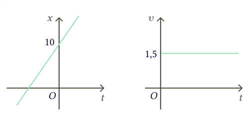
2. При движении тела с постоянной скоростью и его возврате в исходное положение с той же скоростью значение средней (по времени) скорости будет равно нулю.
Отношение пути L (длины траектории) к интервалу времени Δt определяет средний модуль скорости (среднюю путевую скорость):
Обозначение: черта над символом (V̄) обозначает среднее значение этой величины.
Именно физическое понятие «средняя путевая скорость» используется при описании движения в ситуациях следующего типа: «спортсмен/турист... пробежал/прошёл... дистанцию/расстояние... со средней скоростью <...> м/с».
3. Аналитический и графический способы решения задач
- аналитический — решение задачи основано на формулах (физических законах), которые связывают искомую величину и данные в условии задачи;
- графический — решение задачи осуществляется с помощью графика.
Основные закономерности графического способа решения задач по кинематике
1.1. График зависимости модуля скорости v(t) равномерного движения от времени — прямая линия, параллельная оси OX.
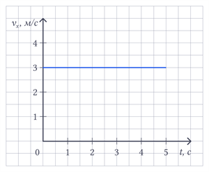

Если изображается зависимость проекции скорости от времени Vx(t), то возможны следующие варианты интерпретации:
- а) график расположен над осью времени — тело движется в положительном направлении оси OX;
- б) график расположен под осью времени — тело движется в отрицательном направлении оси OX.
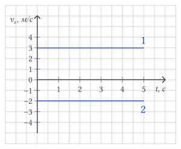
1.2. Модуль перемещения (или пройденный путь при одномерном прямолинейном движении) на графике v(t) в момент времени t1 будет равен площади фигуры (прямоугольника) под графиком модуля скорости.
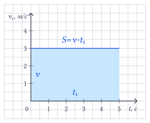
2.1. График модуля перемещения s(t) для равномерного движения — прямая под углом α к оси времени.
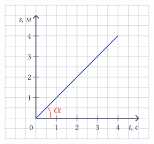
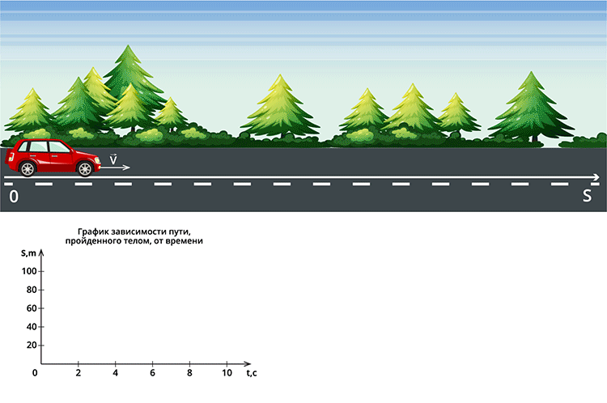
Если изображается зависимость проекции перемещения от времени sx(t), то возможны следующие варианты интерпретации:
- а) график расположен над осью времени — тело движется в положительном направлении оси OX;
- б) график расположен под осью времени — тело движется в отрицательном направлении оси OX.
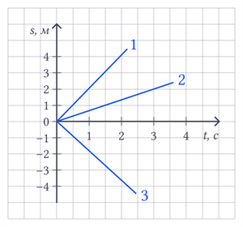
2.2. Модуль скорости равномерного движения на графике модуля перемещения s(t) равен тангенсу угла tgα наклона прямой на графике.
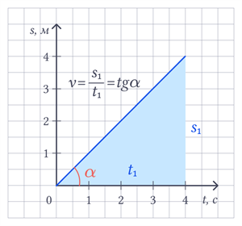
Решение задачи аналитическим и графическим способами
Условие: Два катера, между которыми расстояние 30 м, равномерно движутся навстречу друг другу со значениями модулей скоростей v1 = 2 м/с и v2 = 4 м/с. Определи время встречи катеров. Какой путь успеет пройти первый катер до встречи?
Дано: начальная координата первого катера — x01 = 0 м, а второго — x02 = 30 м. Вектор скорости первого катера V1 сонаправлен оси OX, его проекция будет положительна V1x > 0, а вектор скорости второго катера V2 направлен противоположно оси OX, поэтому его проекция будет отрицательна: V2x < 0.
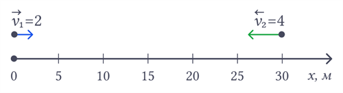
Аналитический способ решения
1. Запишем уравнения движения тел, исходя из формулы x(t) = x0 + vx(t−t0). x1 = 0 + 2t = 2t;
2. В момент встречи tвстр тела будут иметь одинаковую координату x1=x2: 2tвстр = 30 - 4tвстр; 6tвстр = 30; tвстр = 30/6 = 5 с. — расчёт времени встречи катеров.
3. Для ответа на второй вопрос воспользуемся следующей формулой: L = V1 · tвстр; L = 2 · 5 = 10 м. — расчёт пути, пройденного первым катером до момента встречи tвстр.
Графический способ решения
1. Запишем для первого катера уравнение движения: x1 = 0 + 2t = 2t.
2. Заполним таблицу значений x(t) для построения графика движения первого катера: (t=0, x=0; t=1, x=2; t=2, x=4).
3. Запишем для второго катера уравнение движения: x2 = 30 - 4t.
4. Заполним таблицу значений x(t) для построения графика движения второго катера: (t=0, x=30; t=1, x=26; t=2, x=22).
5. Построим графики движений двух катеров.
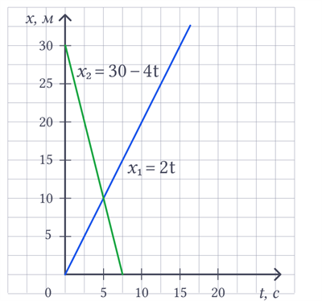
6. Находим по графику:
а) время встречи (точка пересечения) tвстр = 5 с;
б) путь, пройденный первым катером, равен изменению координаты L = x(tвстр) — x01 = 10 м.
Ответ: 5 с; 10 м.
4. Неравномерное движение. Закон сложения скоростей
1. Закон сложения скоростей
Чтобы найти скорость движения одного тела относительно другого, необходимо сложить векторы этих скоростей.
Классический закон сложения скоростей гласит: скорость тела относительно неподвижной системы отсчёта равна геометрической сумме двух скоростей — скорости тела относительно подвижной системы отсчёта и скорости подвижной системы отсчёта относительно неподвижной.
Вспомним, как складываются векторы, направленные в одну сторону.
Пример: легкоатлет бежит в ту сторону, куда дует ветер. Определим, куда направлена результирующая скорость легкоатлета. Вспомним, как складываются векторы. Пусть это будут векторы скорости V1 и V2. Вот они направлены в одну сторону, например, так:
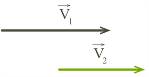
Для того чтобы их сложить, нужно выстроить их друг за другом. Это называется сложением векторов по правилу треугольника. Должно получиться так:
В результате сложения таких векторов должен получиться один результирующий. Покажем его красным цветом. Это вектор V. Он получился, когда мы соединили начало первого вектора с концом последнего.
Два вектора V1 и V2 сложились, и получился один вектор V. Всё просто.
Бывает, что векторы могут быть направлены в разные стороны.
Пример: легкоатлет бежит против ветра. Определим направление результирующей скорости. Скажем, вот так:
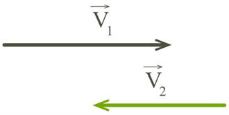
Будем пробовать их складывать по известному правилу — правилу треугольника. Построим векторы друг за другом. Должно получиться примерно так:
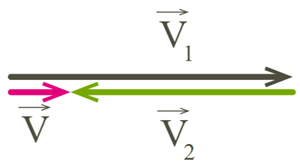
Два вектора V1 и V2 сложились, и получился один вектор V.
Может случиться, что векторы лежат не так ровно, а, скажем, под углом 90° друг к другу.
Пример: речной трамвайчик пересекает реку перпендикулярно течению. Определим направление скорости трамвайчика относительно берега.
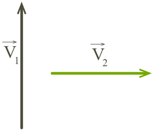
Перед нами два вектора — V1 и V2. Как же их сложить? Снова выстраиваем их друг за другом, чтобы получились стороны треугольника. Или соединяем начала этих векторов — тогда получится правило параллелограмма.
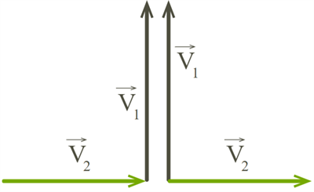
Правило треугольника нам уже знакомо. Просто соединяем начало первого вектора с концом последнего. Для сложения по правилу параллелограмма дорисовываем ещё две стороны напротив уже имеющихся двух. Результат сложения не зависит от выбранного правила сложения — правила треугольника или правила параллелограмма. Должен получиться один и тот же вектор V.
Есть ещё один интересный случай, когда векторы направлены так, что прямоугольный треугольник построить не получается.
Например:
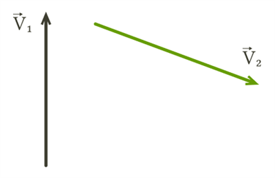
Следуем правилу треугольника или параллелограмма (как в случае, когда угол 90°).

Теперь легко выстраиваем вектор V.
А что, если угол между векторами нужно найти или он задан, а найти необходимо результирующий вектор скорости и т. д.? Что в этом случае поможет?
Всё просто. Для случая, когда векторы образуют прямоугольный треугольник, используем определение синуса:
или косинуса:
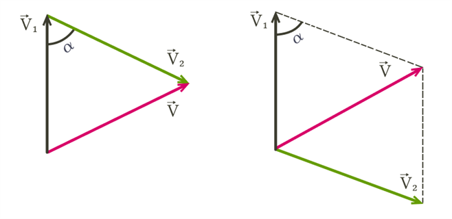
В остальных случаях применяем теорему косинусов:
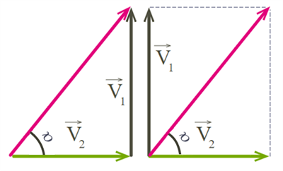
Теперь можно приступать к решению задач на относительное движение.
2. Сложение перемещений
Принцип сложения перемещений является следствием векторной природы перемещения и лежит в основе закона сложения скоростей. Суть принципа сложения перемещений заключается в следующем.
Если тело одновременно участвует в двух движениях, то его полное (результирующее) перемещение Δr относительно неподвижной системы отсчёта (например, земли) равно векторной сумме его перемещений в каждом из этих движений.
Пусть Δr2 — перемещение тела относительно земли (искомое полное перемещение);
Δr1 — перемещение тела относительно подвижной системы отсчёта (например, лодки, вагона);
Δr12 — перемещение самой подвижной системы отсчёта относительно земли,
тогда формула сложения перемещений будет выглядеть следующим образом:
💡 Обрати внимание!
Все перемещения — векторы. Их сложение происходит по правилу треугольника или параллелограмма.
Рассмотрим пример, наглядно демонстрирующий векторное сложение перемещений.
Пример: Лодка, переплывающая реку.
Река течёт с востока на запад со скоростью Vтеч. = 1 м/с. Лодка движется относительно воды перпендикулярно берегу (с юга на север) со скоростью Vл/в = 2 м/с. Чему будет равно перемещение лодки относительно берега за t=10 с?
Решение
Находимся в неподвижной системе отсчёта, связанной с берегом.
1. Разобьём движение на составляющие.
Перемещение лодки относительно воды Δrл/в. Лодка плывёт поперёк реки. За 10 с она переместится относительно воды на Δrл/в = Vл/в · t = 2 м/с · 10 с = 20 м (на север).
Перемещение воды относительно берега (Δrв/б). Течение сносит лодку. За 10 с вода (а с ней и всё, что в ней) сместится относительно берега на Δrв/б = Vтеч. · t = 1 м/с · 10 с = 20 м (на запад).
2. Сложение перемещений.
Искомое перемещение лодки относительно берега Δrл/б — это векторная сумма:
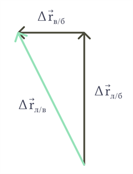
Вектор Δrл/б будет направлен под углом к берегу.
3. Находим результат.
По теореме Пифагора (перемещения перпендикулярны):
Хотя лодка стремилась плыть прямо на север (относительно воды), течение снесло её на запад.
В результате наблюдатель на берегу видит, что лодка двигалась по прямой, но под углом к берегу, и её полное перемещение (22,4 м) больше, чем расстояние, которое она проплыла бы в стоячей воде (20 м).
3. Определение неравномерного прямолинейного движения. Средняя и мгновенная скорость
В природе равномерное движение встречается редко или на очень коротких перемещениях. Неравномерное движение встречается гораздо чаще равномерного.
Пример:
1. Яблоко падает с ветки дерева. Чем ближе к земле, тем выше скорость.
2. Футболист перемещается по футбольному полю во время матча. В процессе игры футболист может очень быстро бежать, или идти пешком, или стоять. В этом случае за равные промежутки времени футболистом совершаются различные перемещения.
При сравнении пройденных телами путей, указанных в примерах, за одинаковые промежутки времени может оказаться, что они разные. Это проявление неравномерного движения.
Неравномерное движение — движение, при котором тело за любые равные промежутки проходит разные пути.
Пример:
автобус начинает отъезжать от остановки. За первую секунду, допустим, он проезжает 2 м, за следующую секунду — 3 м, а в последующие 3 секунды проезжает по 5 м.
Для описания неравномерного движения используют понятие средней путевой скорости как отношения пройденного пути к промежутку времени, в течение которого пройден путь:
где L — пройденный путь, t — время движения.
На основе предыдущего примера рассчитаем среднюю скорость автобуса.
Определяем время движения: t = 1 c + 1 c + 3 c = 5 c.
Найдём пройденный путь: L = 2 м + 3 м + 15 м = 20 м.
Подставляем в формулу расчёта средней скорости: Vср = 20 м / 5 c = 4 м/с.
Итак, средняя скорость автобуса составила 4 м/с.
Второй величиной, описывающей неравномерное движение, является средняя скорость перемещения. Она равна отношению перемещения ко времени, в течение которого совершено перемещение:
где S — перемещение, t — время совершения перемещения.
Рассмотрим движение тела из точки A в точку B (рис. 1). Траектория AB является криволинейной.
Введём понятие «средняя скорость».
На рисунке 33 показаны вектора перемещений тела Δr3, Δr2 и Δr1 за различные сокращающиеся промежутки времени Δt3, Δt2 и Δt1.
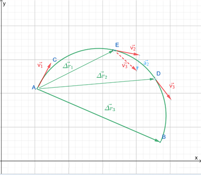
Средняя скорость равна отношению перемещения за конечный промежуток времени:
Средняя скорость является векторной величиной:
- направление средней скорости находится согласно математической формуле определения данной физической величины: vср ↑↑ Δr — средняя скорость сонаправлена с вектором перемещения;
- числовое значение средней скорости (модуль, проекции на координатные оси) определяется согласно геометрическим правилам работы с векторами;
- физические понятия отличаются от математических понятий наличием единиц измерения ([Vср] = [м/с]).
Участки траектории AB, AD и AE (рис. 33) характеризуются, соответственно, средними скоростями: Vср3, Vср2, Vср1.
Мгновенная скорость — физическая величина, описывающая скорость движения объекта в конкретный момент времени.
Если уменьшать неограниченно промежуток времени Δt, то быстрота движения тела характеризуется понятием «мгновенная скорость» (или «скорость»).
Математическая запись уменьшения промежутка времени: Δt → 0.
Физический смысл принципа уменьшения промежутка времени: на определённом этапе данной процедуры значения средней скорости будут приблизительно одинаковыми и определение физического понятия «средняя скорость» изменится на физическое понятие «мгновенная скорость».
Мгновенная скорость является векторной величиной:
- вектор мгновенной скорости (далее — скорости) направлен по касательной к траектории в исследуемой точке (проверь, как на рисунке 33 «хорды — перемещения Δr3, Δr2 и Δr1» при уменьшении промежутков времени Δt3, Δt2 и Δt1 изображаются касательными, которые соответствуют векторам скоростей v3, v2, v1).
Спидометр — это устройство, которое используется для измерения скорости движения различных транспортных средств.
Он отображает, с какой скоростью автомобиль, мотоцикл или другой механизм движется в конкретный момент. Обычно спидометр располагается на панели приборов и может быть как аналоговым, с циферблатом и стрелкой, так и цифровым, где скорость представлена на экране.
Принципы работы спидометра могут варьироваться. В большинстве современных автомобилей используются механические или электронные датчики, которые фиксируют скорость вращения колёс и преобразуют эти данные в показания скорости, отображаемые водителю. Кроме того, спидометры могут включать в себя дополнительные функции, такие как одометр, регистрирующий общую дистанцию, или дальномер, указывающий расстояние до определённой цели.
Спидометр играет ключевую роль в управлении автомобилем, позволяя водителям контролировать свою скорость, следовать правилам дорожного движения и избегать штрафов за превышение предельных значений, что, в свою очередь, способствует общей безопасности на дороге.

5. Ускорение. Равноускоренное прямолинейное движение
1. Ускорение
Частным (простым) видом неравномерного движения является прямолинейное равноускоренное движение, когда траектория движения тела — прямая линия. Для характеристики изменения скорости вводят новую физическую величину — ускорение.

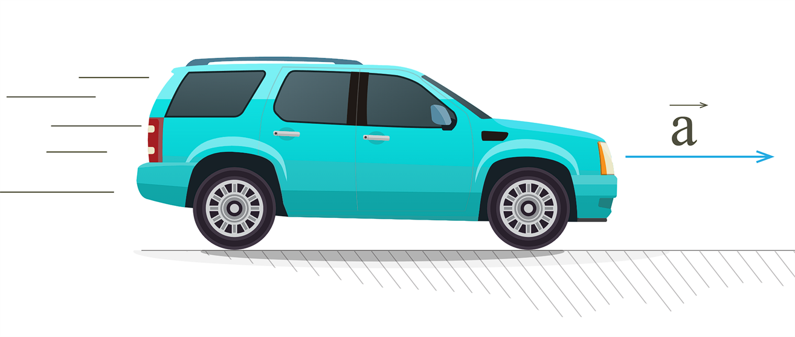
Ускорение — физическая величина, характеризующая изменение скорости за единицу времени: [a] = 1 м/с².
Равноускоренное движение — это движение с постоянным ускорением: a = const.
Ускорение тела при его равноускоренном движении — это величина, равная отношению изменения скорости к промежутку времени, за которое это изменение произошло:
Если уменьшать неограниченно промежуток времени Δt, то изменение скорости движения тела в конкретный момент времени характеризуется физическим понятием мгновенное ускорение.
Мгновенное ускорение — это предел отношения изменения скорости Δv к промежутку времени Δt, в течение которого это изменение произошло, при стремлении Δt к нулю.
Вектор мгновенного ускорения при движении тела по криволинейной траектории представляет векторную сумму компонентов данного вектора, которые направлены по касательной и нормали (перпендикуляр к касательной).
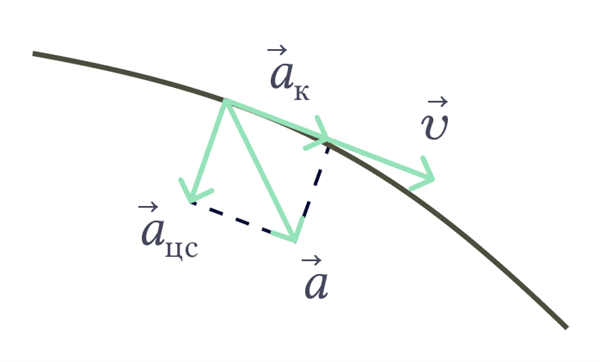
Касательное ускорение отвечает за то, как быстро растёт или падает твоя скорость. Оно всегда направлено вдоль дороги (по касательной).
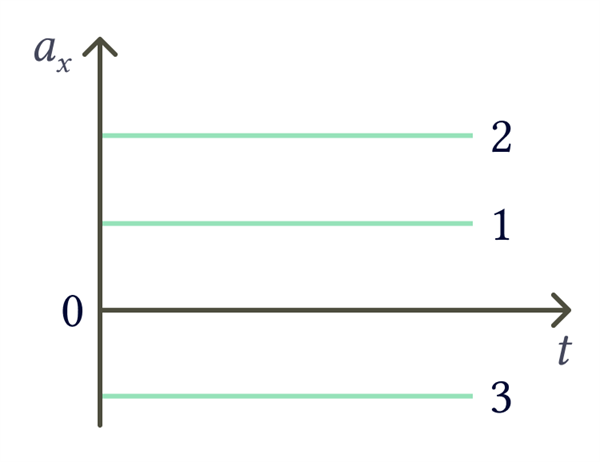
График проекции ускорения выглядит как прямая линия, параллельная оси времени t, так как ускорение тела не меняется. График 2 находится выше графика 1, значит, тело 2 имеет большее ускорение. Для 1 и 2 проекция ускорения положительная, так как находится над осью t. График 3 находится под осью t, значит, проекция ускорения отрицательная.
2. Скорость и путь при равноускоренном движении
Формула для определения скорости точки в любой момент времени при её движении с постоянным ускорением:
Векторному уравнению в случае движения на плоскости соответствуют два скалярных уравнения для проекций скорости на координатные оси X и Y: Vx = V0x + axt; Vy = V0y + ayt.
То есть при движении с постоянным ускорением скорость меняется по линейному закону.
Скорость прямолинейного равноускоренного движения: Vx = V0x + axt, где V0x — проекция начальной скорости, ax — проекция ускорения, t — время.
Если в начальный момент тело покоилось, то V0 = 0. Для этого случая формула принимает следующий вид: Vx = axt.
💡 Обрати внимание!
Если скорость тела при равноускоренном прямолинейном движении возрастает, то ускорение направлено в ту же сторону, что и скорость; если же скорость тела при данном движении уменьшается, то ускорение направлено в противоположную сторону.
Рассмотрим некоторые особенности перемещения тела при прямолинейном равноускоренном движении. Уравнение, которое описывает это движение, было выведено Галилеем в XVI веке. Необходимо помнить, что при прямолинейном равномерном или неравномерном движении модуль перемещения совпадает по своему значению с пройденным путём. Формула выглядит следующим образом:
где a — это ускорение.
В ряде случаев бывает полезным использовать формулу для расчёта пути при равноускоренном прямолинейном движении, которая не содержит время:
Сравним графики равномерного и равноускоренного движения.
Графики прямолинейного равномерного движения:
- Зависимость ускорения от времени. Так как при равномерном движении ускорение равно нулю, то зависимость a(t) — прямая линия, которая лежит на оси времени.
- Зависимость скорости от времени. Скорость со временем не изменяется, график v(t) — прямая линия, параллельная оси времени.
- Правило определения пути по графику v(t): численное значение перемещения (пути) — это площадь прямоугольника под графиком скорости.
- Зависимость пути от времени. График s(t) — наклонная линия.
3. График зависимости скорости от времени при прямолинейном движении с постоянным ускорением
Самое простое из всех неравномерных движений — это прямолинейное движение с постоянным ускорением.
При движении с постоянным ускорением (a = const) скорость тела линейно зависит от времени:
В проекциях на ось Ох данные равенства имеют вид: ax = const; Vx = V0x + axt.
Построим графики для случаев ax > 0 и ax < 0. Примем V0x > 0. Поскольку в обоих случаях ax = const, то графиком зависимости ax(t) ускорения от времени в обоих случаях будет прямая, параллельная оси времени. Только при ax > 0 данная прямая будет лежать в верхней полуплоскости, а при ax < 0 — в нижней.
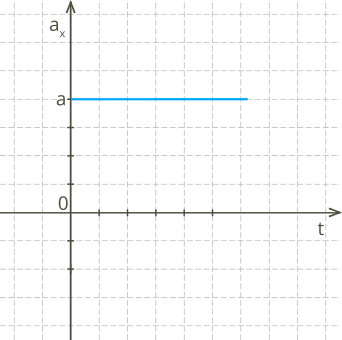
0" onerror="this.style.display='none'; this.nextElementSibling.style.display='block';">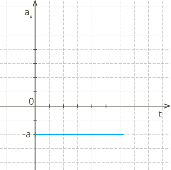
Графиком зависимости скорости движения тела от времени Vx(t) является прямая, пересекающая ось скорости в точке V0 и образующая с положительным направлением оси времени острый угол при ax > 0 и тупой угол при ax < 0.
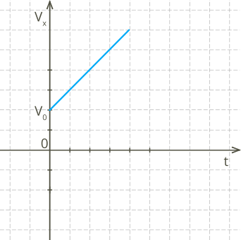
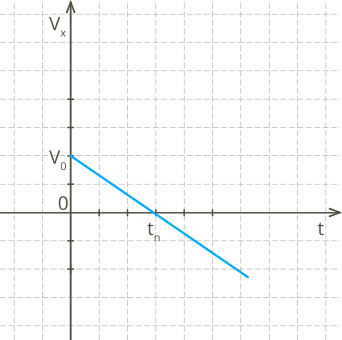
График на рисунке 38 описывает возрастание проекции скорости Vx. При этом модуль скорости тела также растёт. Данный график соответствует равноускоренному движению тела.
График на рисунке 39 показывает, что проекция Vx скорости тела вначале положительна. Она уменьшается и в момент времени t = tп становится равной нулю. В этот момент тело достигает точки поворота, в которой направление скорости тела меняется на противоположное, и при t > tп проекция скорости становится отрицательной.
Из последнего графика также видно, что до момента поворота модуль скорости уменьшался — тело двигалось равнозамедленно. При t > tп модуль скорости растёт — тело движется равноускоренно. Для любого равнопеременного прямолинейного движения площадь фигуры между графиком Vx и осью времени t численно равна проекции перемещения Δrx.
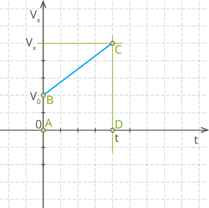
Согласно данному правилу, проекция перемещения Δrx при равнопеременном движении определяется площадью трапеции ABCD. Эта площадь равна полусумме оснований трапеции, умноженной на её высоту:
В результате:
Из данной формулы получим формулу для среднего значения проекции скорости:
При движении с постоянным ускорением данное отношение выполняется не только для проекций, но и для векторов скорости:
Средняя скорость движения с постоянным ускорением равна полусумме начальной и конечной скоростей.
4. Графики зависимости перемещения и координаты тела от времени при движении с постоянным ускорением
Зависимость проекции перемещения от времени при равноускоренном движении имеет вид:
Учитывая, что проекция перемещения движущегося тела равна: Δrx = x - x0, зависимость координаты движущегося тела от времени имеет вид:
Последняя формула выражает кинематический закон равнопеременного движения.
Поскольку при равнопеременном движении зависимости перемещения и координаты тела от времени являются квадратичными функциями, то графиками зависимости данных величин от времени являются участки парабол.
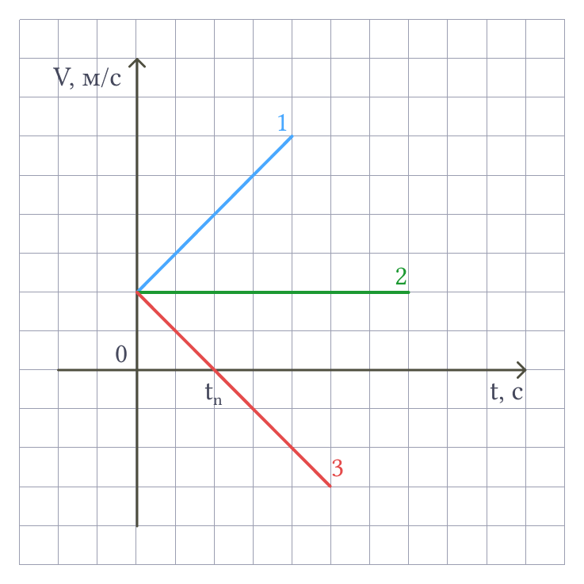
На рисунке 41 представлены графики зависимости скорости движения тела при ax = a > 0 (прямая 1), при ax = a = 0 (прямая 2) и при ax = a < 0 (прямая 3).
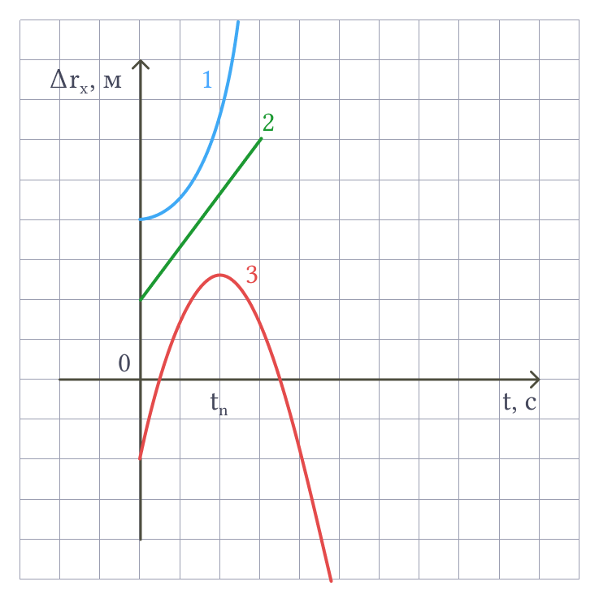
На рисунке 42 представлены графики зависимости проекции перемещения движущегося тела от времени при ax = a > 0 (кривая 1), при ax = a = 0 (прямая 2) и при ax = a < 0 (кривая 3).
При ax = a > 0 проекция перемещения всё время увеличивается (кривая 1). А при ax = a < 0 проекция перемещения увеличивается до момента времени t = tп, а затем уменьшается. Это происходит потому, что в момент времени tп скорость тела становится равной нулю, а направление его движения меняется на противоположное, то есть происходит поворот. Моменту времени tп на кривой 3 рисунка 42 соответствует вершина параболы.
График зависимости пути S от времени при движении, при котором направление скорости не изменяется, совпадает с графиком зависимости проекции перемещения от времени.
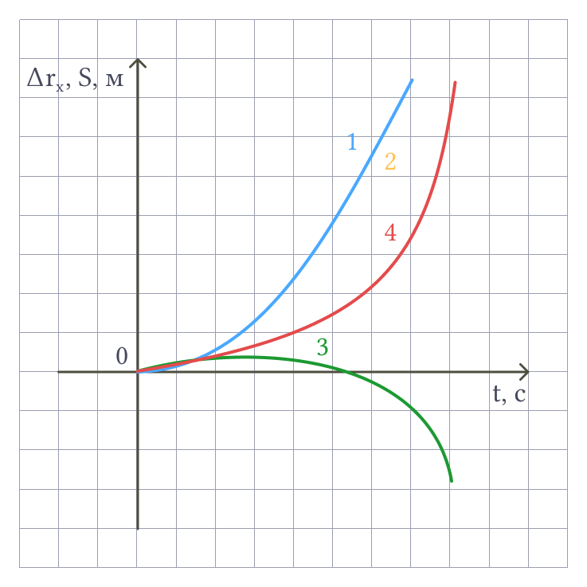
Если же направление скорости во время движения изменяется, то есть происходит поворот, то эти графики совпадают только при 0 < t < tп. После момента поворота tп проекция перемещения начинает уменьшаться, а путь продолжает увеличиваться. При этом путь увеличивается на столько, на сколько за то же время уменьшается проекция перемещения.
График зависимости координаты от времени получается из графика зависимости перемещения от времени смещением последнего на величину |x0| вверх при x0 > 0 или вниз при x0 < 0, поскольку x = x0 + Δrx.
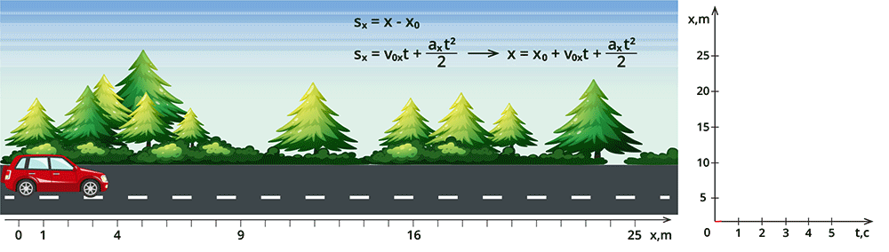
6. Движение с постоянным ускорением свободного падения
1. Свободное падение тел
Свободное падение тел — частный случай движения с постоянным ускорением. При этом ускорение телу сообщает Земной шар. Свободное падение изучал великий итальянский учёный Галилео Галилей. Именно он доказал, что все тела имеют одинаковое ускорение при свободном падении.
Исаак Ньютон впервые провёл простой опыт (рис. 1).
1) В стеклянную трубку помещают различные предметы: дробинку, кусочек пробки, пушинку. Затем трубку переворачивают и наблюдают, что первая упадёт дробинка, потом — пробка, последней плавно опустится пушинка.
2) То же самое проделывают с трубкой, из которой выкачан воздух. В вакууме все три предмета падают одновременно. Значит, в воздухе свободному падению тел препятствует сопротивление воздуха.
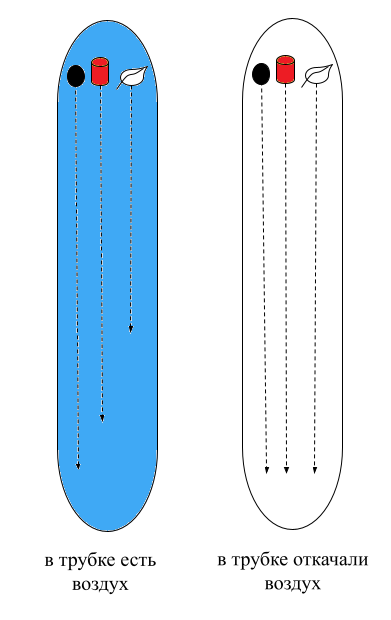
Опыт показывает, что вблизи поверхности Земли ускорение всех тел одинаково и постоянно.
Свободное падение — движение тела только под влиянием притяжения его к Земле.
Ускорение свободного падения — ускорение, сообщаемое Землёй всем телам. Ускорение свободного падения направлено всегда вертикально вниз и обозначается \(g\).
2. Векторное и скалярное уравнения скорости при свободном падении
Общий вид:
- векторное уравнение: v = v(t) = v0 + a(t-t0);
- числовые (скалярные) уравнения: vx(t) = v0x + ax(t-t0); vy(t) = v0y + ay(t-t0); vz(t) = v0z + az(t-t0).
Свободное падение:
- векторное уравнение: v(t) = v0 + g(t-t0), где v0 — скорость тела в начальный момент времени t0, v(t) — скорость тела в произвольный момент времени t;
- числовые (скалярные) уравнения: vx(t) = v0x + gx(t-t0); vy(t) = v0y + gy(t-t0); vz(t) = v0z + gz(t-t0).
Модуль скорости: v(t) = √(vx2(t) + vy2(t)).
Если ось OX направлена горизонтально, а ось OY — вертикально вниз, то:
3. Движение тела, брошенного вертикально вверх
Общий вид (векторное уравнение): r = r0 + v0(t-t0) + a(t-t0)2/2.
Числовые уравнения: x(t) = x0 + v0x(t-t0) + ax(t-t0)2/2; y(t) = y0 + v0y(t-t0) + ay(t-t0)2/2.
Движение вертикально вверх:
- Векторное уравнение скорости: v(t) = v0 + g(t-t0);
- Если ось OX горизонтально, OY вертикально вверх, то: vx(t) = v0x = 0; vy(t) = v0 - g(t-t0).
Уравнение координаты при движении вверх (ось OY вверх):
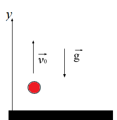
4. Движение тела, брошенного под углом к горизонту
Если тело брошено под углом к горизонту, то его начальная скорость v0 раскладывается на две проекции:
По горизонтали (ось OX) тело движется равномерно (без ускорения), по вертикали (ось OY) — равноускоренно с ускорением свободного падения g.